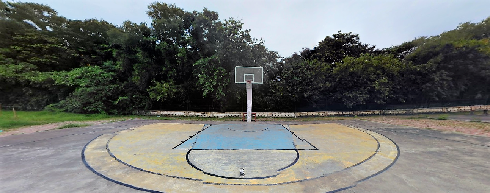
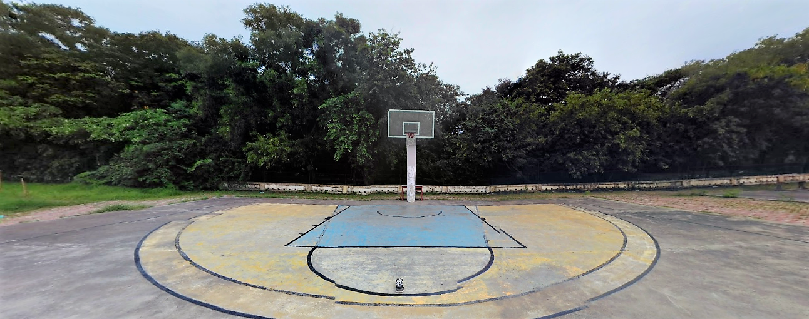

Brief Writeup
This Institute was established in 1961 as one of the RECs for imparting
technical education in Civil, Mechanical and Electrical Engineering.In exercise of the powers conferred
by section 3 of the University Grants Commission (UGC) Act, 1956, the Central Government on the advice
of the University Grants Commission, has declared the Sardar Vallabhbhai Regional College of Engineering
& Technology (SVREC), Surat to Sardar Vallabhbhai National Institute of Technology (SVNIT), Surat with
status of “Deemed University” with effect from 4th December 2002. The Institute has been granted the
status of ‘Institute of National Importance’ w.e.f. Aug. 15, 2007. At present, the Institute is offering
Six UG Programmes, Eighteen PG Programmes and Three M.Sc. Five Years Integrated Programme including
doctoral programme in all above branches.
Director's Corner

(Prof. S. R. Gandhi)
Welcome to NIT Surat. You have arrived at one of the finest institutions in India.We take pride in the
quality of research our faculty do, in the technologies that we put out into the society and the world
class graduates we produce. If you are looking for an opportunity to study or work in a world-class
institution in India, you have come to the right place! Nationality is no bar here. With a continuously
evolving academic curriculum which lays great emphasis on practical training, we provide world class
education and training to our students.


 
